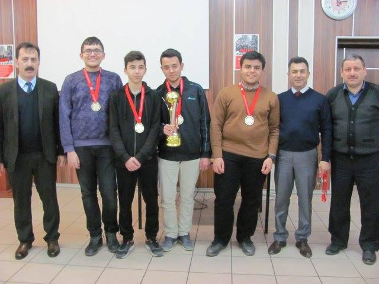

Benim adım Burak Ortakuz. Eylül 2000 yılında Karabük'te doğdum. Kendimden küçük bir kardeşim var ismi Tolga Mete.
Küçükken mahallemizde futbol gibi oyunlar oynamayı ve çizgi film oynamayı severdim. Anaokulunda iken bir gün babamın
eve satranç takımı getirmesi ile beraber yeni bir hobi edinmiş oldum.
İlkokulumu Esentepe İlköğretim Okulu'nda okudum. İlkokulun ilk yıllarında satranç konusunda kendimi geliştirme fırsatı buldum ve okulun satranç kulübüne katıldım. Okul öğretmenim öncülüğünde bir süre tiyatro da yaptım. 3. sınıfta İlk defa bir satranç turnuvasına katıldım. Bu turnuvaya katılmama rağmen bu turnuva aslında 4-5. sınıflar için yapılan bir turnuvaydı. Buna rağmen son maçımı kazanmam halinde 2. olacaktım ama malesef olamadım.
4. sınıfta satranç hocamız okul değiştirdiğinden dolayı turnuvaya katılma imkanım olmadı. 5. sınıfa geçtiğimde
bulunduğum okuldan 100.Yıl mahallesine taşınmamız sebebi ile Şehit Nurettin Seki okuluna gittim. Orada yeniden
bir satranç öğretmenimiz vardı ve turnuvalara katılma fırsatı bulmuştum. Katıldığım ilk turnuvada -29 Ekim Cumhuriyet
Bayramı Turnuvası- 7 maçın 7'sini de kazanarak altın madalyayı kazanma fırsatı buldum.
Daha sonraları katıldığım turnuvalarda yine bir sürü madalya ve 2 adet kupa kazanmayı başardım. Lise sınavı olarak ilk defa TEOG sınavı yaşanıyordu ve o sınav sonucunda Safranbolu Anadolu Lisesi'ni kazanmayı başardım. Orada yine satranç kariyerime devam ettim ve 11. sınıfta Türkiye geneli satranç turnuvasının Karabük ayağını lisedeki satranç ekibimiz ile kazandık.

Bunun üzerine okul öğretmenimiz ve ekibimiz ile birlikte
Düzce'ye bölge turnuvasına katılmak için gittik. Orada malesef derece yapamadık ama güzel bir geziydi. Üniversite sınavına ilk
denememde 63.000 ile istediğim dereceyi elde edemedim.
İkinci denemeye gireceğim sene yeni hobim olan animeler ile tanıştım.
Küçüklüğümde sürekli çizgi film izlemekten zevk alırdım ve bunların anime olduğunu öğrendikten sonra anime izlemeye başladım.
İkinci denememde 70.000 oldum ama daha fazla çalışmak istemediğimden her zaman hayalim olan mesleği yukarıdan aşağı tercih
olarak yazdım. Bu şekilde Sakarya Üniversite'si bilgisayar mühendisliği 2.öğretim bölümünü kazandım. 1 Sene hazırlık okudum.
Bu sırada Tempest Fansub'a katılarak anime çevirmeni oldum. Corona virüs yüzünden okulumuz uzaktan devam ediyor
ve 1. sınıf bitmek üzere.